AGV, AMR, OHT 등의 자율주행 설비를 활용해 자재/반제품을 현 공정에서 다음 공정으로 이동시키는 반송 작업 자동화를 구현합니다. 자율주행 시스템을 적용하여 별도의 가이드 없이 최적의 경로 탐색으로 효율을 높이고, 안전한 무인 반송을 구현합니다.
| AGV |
AMR |
OHT |
| 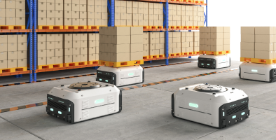 |
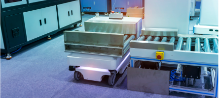 |
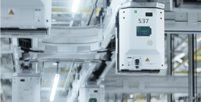 |
|
사전에 설정된 경로를 따라 이동하여 반복 가능한 작업 수행
|
인공지능과 센서 기술 적용으로 자체적으로 주행 환경을 감지하여 최적의 경로 선택
|
자동화된 운송시스템으로 천장에 설치된 가이드 레일을 따라 이동
공간 활용 극대화
|
-
AGV
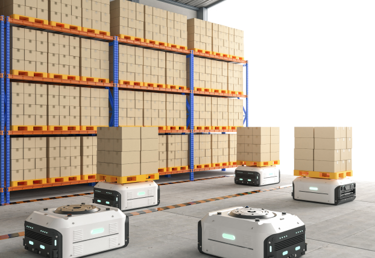
사전에 설정된 경로를 따라 이동하여 반복 가능한작업 수행
-
AMR
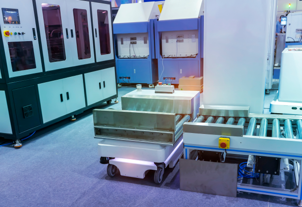
인공지능과 센서 기술 적용으로 자체적으로 주행 환경을 감지하여 최적의 경로 선택
-
OHT
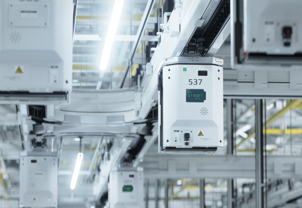
자동화된 운송시스템으로 천장에 설치된 가이드 레일을 따라 이동
공간 활용 극대화
스태커 크레인, 멀티셔틀 등의 설비를 활용해 제한된 면적이나 공간에서 효율적으로 보관 자동화를 구현합니다.
제품 사이즈에 따라 Pallet 타입과 Box 타입으로 구분되며, 보관 효율/처리 물동량 등 고객 환경에 적합한 최적의 솔루션을 선정하여 제공합니다.
| Pallet 보관 Type |
| Stacker Crane |
Shuttle |
| 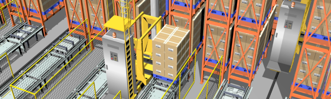 |
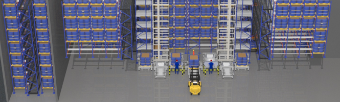 |
|
대량 제품(Pallet)단위 취급
Rack 사이를 Crane 통해 파렛트 자동 입고/보관/출고하는 시스템
한정된 공간에 높은 보관량
입출고 물동량, 보관량, 층고 등을 고려하여 Crane 수량 산정
|
대량 제품(Pallet)단위 취급
Shuttle 을 통해 Rack에 파렛트를 자동 입고/보관/출고하는 시스템
동일 면적에 최대 보관량 가능
입출고 물동량, 보관량, 동선 등에 고려하여 적합한 Type 선정
|
| Box 보관 Type |
| Shuttle |
Mini-Loader |
AutoStore |
| 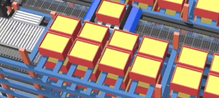 |
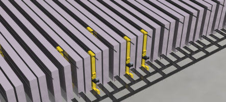 |
 |
|
경량/소량 제품(Bucket)취급
셔틀과 리프터 시스템을 통해 자동 입고/보관/출고하는 시스템
|
경량/소량 제품(Bucket)취급
Mini Crane을 통해 자동으로 입고/보관/출고하는 시스템
|
경량/소량 제품(Bucket)취급
Robot이 그리드 상단에서 자동 입고/보관/출고하는 시스템
|
Pallet 보관 Type
-
Stacker Crane
대량 제품(Pallet)단위 취급
Rack 사이를 Crane 통해 파렛트
자동 입고/보관/출고하는 시스템
한정된 공간에 높은 보관량
입출고 물동량, 보관량, 층고 등을
고려하여 Crane 수량 산정
-
Shuttle
대량 제품(Pallet)단위 취급
Shuttle 을 통해 Rack에 파렛트를 자
동 입고/보관/출고하는 시스템
동일 면적에 최대 보관량 가능
입출고 물동량, 보관량, 동선 등에
고려하여 적합한 Type 선정
Box 보관 Type
-
Shuttle
경량/소량 제품(Bucket)취급
셔틀과 리프터 시스템을 통해
자동 입고/보관/출고하는 시스템
-
Mini-Loader
경량/소량 제품(Bucket)취급
Mini Crane을 통해 자동으로
입고/보관/출고하는 시스템
-
AutoStore
경량/소량 제품(Bucket)취급
Robot이 그리드 상단에서 자동 입고/보관/출고하는 시스템
피킹 자동화 설비와 분류 자동화 설비로 구분되며 피킹로봇, 소터, QPS 등을 활용하여
투입과 출하 업무에 작업자의 오류를 줄이고 속도 및 정확도를 향상시킬 수 있습니다.
| 피킹/분류 설비 |
| 로봇 피킹 |
소터 (자동) |
QPS |
| 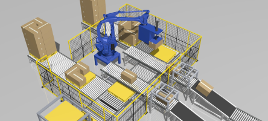 |
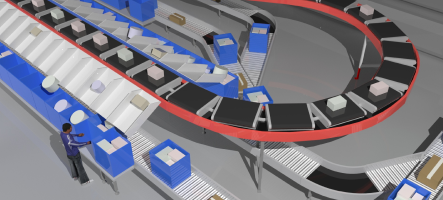 |
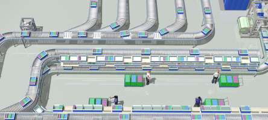 |
|
상품의 특성을 파악해 로봇이 자동으로
피킹하는 설비
소형 제품부터 박스에 이르기까지
다양한 환경에 적용 가능
|
상품에 부착된 바코드를 빠르게 인식하여 자동으로 분류하는 설비
고객 제품의 형상, 사이즈, 중량, 처리량 등에 따라 적합한 타입의 소터 구축
|
상품이 담긴 박스를 , 피킹이 필요한 스테이션으로 자동으로 이송하고, 작업자는 점등된 표시기를 확인하여 피킹/ 분류하는 시스템
작업 동선을 최소화하고, 작업의 단순화가 가능
|
*QPS : Quick Picking System
설비가동상태, 장애발생통지, 운영현황 시각화 등 3D기반 물류 현장 실시간 모니터링/관제 시스템을 제공합니다. (MiiT : Miracom Digital Twin Platform) 이를 통해 실시간으로 발생하는 상태/알람 데이터들을 연계하여 장애감지/분석/조치에 이르는 통합 현장 관리를 수행할 수 있습니다.
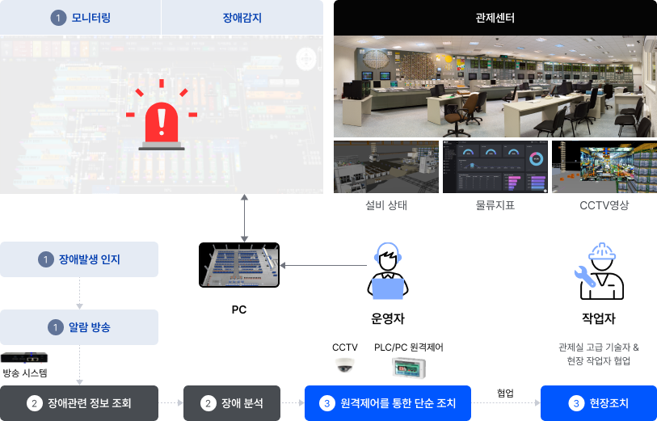
모니터링 장애감지 장애발생 인지 알람 방송 방송시스템 장애관련 정보 조회 장애 분석 원격제어를 통한 단순 조치 협업 현장조치 PC 운영자 작업자 CCTV PLC/PC 원격제어 관제실 고급 기술자 & 현장 작업자 협업 관제센터 설비상태 물류지표 CCTV영상